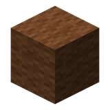
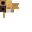

brown woolCreate: Integrated Farming
附属模组
鸡鸭鹅的自动化养殖：栖架、渔网、真空收割
这是什么
把「养动物」接进 Create 产线：各种栖架（鸡/鸭/鹅/火鸡）自动产蛋，渔网捕鱼（含岩浆渔网），真空收割机范围收集掉落物。
命名空间：
create_integrated_farming 1.20.1 版本：本页物品与配方直接取自该版本的 jar。鸡与火鸡4
火鸡舍create_integrated_farming:autumnity_turkey_roost
没有工作台/机器配方
鸡舍create_integrated_farming:chicken_roost
没有工作台/机器配方
寒带鸡舍create_integrated_farming:vanillabackport_chicken_roost_cold
没有工作台/机器配方
暖带鸡舍create_integrated_farming:vanillabackport_chicken_roost_warm
没有工作台/机器配方
鸭与鹅13
普通鸭舍create_integrated_farming:confluence_duck_roost_common
没有工作台/机器配方
绿头鸭舍create_integrated_farming:confluence_duck_roost_mallard
没有工作台/机器配方
坎贝尔鸭舍create_integrated_farming:duck_roost_campbell
没有工作台/机器配方
雌鸭舍create_integrated_farming:duck_roost_female
没有工作台/机器配方
鸭舍create_integrated_farming:duck_roost_normal
没有工作台/机器配方
北京鸭舍create_integrated_farming:duck_roost_pekin
没有工作台/机器配方
鸭舍create_integrated_farming:environmental_duck_roost
没有工作台/机器配方
加拿大鹅舍create_integrated_farming:goose_roost_canadian
没有工作台/机器配方
灰雁舍create_integrated_farming:goose_roost_greylag
没有工作台/机器配方
鹅舍create_integrated_farming:goose_roost_normal
没有工作台/机器配方
Ping 鹅舍create_integrated_farming:goose_roost_ping
没有工作台/机器配方
可疑鹅舍create_integrated_farming:goose_roost_sus
没有工作台/机器配方
未命名鹅舍create_integrated_farming:goose_roost_untitled
没有工作台/机器配方
捕捞2
渔网create_integrated_farming:fishing_net
收获2
空禽舍create_integrated_farming:roost

真空收割器create_integrated_farming:vacuum_harvester